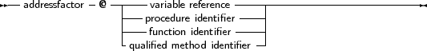

The address operator @ returns the address of a variable, procedure or function. It is used as follows:
_________________________________________________________________________________________________________Address factor

___________________________________________________________________
The @ operator returns a typed pointer if the $T switch is on. If the $T switch is off then the address operator returns an untyped pointer, which is assigment compatible with all pointer types. The type of the pointer is ^T, where T is the type of the variable reference. For example, the following will compile
Program tcast;
{$T-} { @ returns untyped pointer } Type art = Array[1..100] of byte; Var Buffer : longint; PLargeBuffer : ^art; begin PLargeBuffer := @Buffer; end. |
Changing the {$T-} to {$T+} will prevent the compiler from compiling this. It will give a type mismatch error.
By default, the address operator returns an untyped pointer: applying the address operator to a function, method, or procedure identifier will give a pointer to the entry point of that function. The result is an untyped pointer.
This means that the following will work:
Procedure MyProc;
begin end; Var P : PChar; begin P:=@MyProc; end; |
By default, the address operator must be used if a value must be assigned to a procedural type variable. This behaviour can be avoided by using the -Mtp or -MDelphi switches, which result in a more compatible Delphior Turbo Pascal syntax.